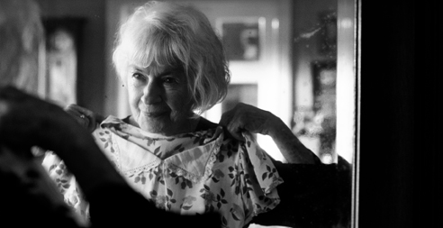
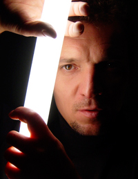

Directed by Dorota Kedzierzawska; Poland; 2007; 104 minutes

Pittsburgh Premiere
Awards
* 2008, 51st San Francisco International Film Festival- Audience Award
* 2008 Trieste Film Festival- Audience Award, Jury Special Mention
* 2008 Wisconsin Film Festival- Brew Audience Award for Best Narrative Film
* 2008 Berdyansk [Ukraine] International Film Festival- Grand Prix, Best Actress, Best Cinematography,
* 2008 Leeds International Film Festival- Audience Award
* 2008 Polish Film Academy Golden Eagle Award for Best Actress in a Leading Role
Despite cross-stitched samplers of home being where the heart is, home is often where the house is. Those we love are often just the ones we love by convention. Mamma’s little boy, swinging from the tree branches, grows to be the distant son with the spoiled and disrespectful daughter. In response to this, Aniela asks, “To what has my life amounted?” Now in her 90s, Aniela is finally alone in her equally aged and weathered country house, with her most loyal listener- her dog. The world, and the property-hungry, newly-rich neighbors, are ready for her time to come, but Aniela is ready to take time slowly and quietly. She blurs memories and observations but reaches a conclusion. It is most important that her house endure. It is a keeper of memory, of time and the remnants of heart. Each black and white still of the film acts as a preservation in its own right. The camera captures Aniela’s age like a highly contrasted landscape. Cinematographer Arthur Reinhart charges the simple ways with which Aniela fills her day- peeling an apple, buttering bread, binocular viewing from her window- with the emtions she experiences as she approaches her time to die.
Presented in conjunction with Cinema and Digital Arts at Point Park University.
Supported by Consulate General of the Republic of Poland in New York

Dorota Kedzierzawska,
Writer, Director
Kędzierzawska was born June 1, 1957 in Łódź, Poland and studied at the University of Łódź, the National Film School in Łódź and at the Russian State Institute of Cinematography (VGIK). Kędzierzawska directed several short films, including Agnieszka (80), The Egg (82), Beginnings (83) and Gucia (85) and the television film The End of the Word (88), before directing her first feature, Devils, Devils (91). Her other features include Crows (94), Nothing (98), I Am (05) and Time to Die (07). Her films have often concentrated on the experiences of disadvantaged children who contend difficult financial situations and/or adult rejection. Time to Die (Pora Umierać, 2007), featuring Polish screen and stage legend Danuta Szaflarska is her most recent film and a dedication to her grandmother.

Arthur Reinhart,
Producer, Cinematographer
Reinhart was born March 24, 1965 in Kluczbork Poland and completed studies at the National Film School in Łódź, Poland in 1988. Reinhart has been recognized internationally with such awards as the 1994 Golden Frog Award for the best Cinematography in the World, the Kodak Award for the Best Young Director of Photography and Best Director of Photography at the XVIII Polish Feature Film Festival in 1998 and again the Best Director of Photography at the same festival in 2005. He was the cinematographer of Kevin Reynold’s 2006 Tristan & Isolde. In addition to being Dorota’s Kedzierzawksa’s partner in marriage, Reinhart has produced and directed the cinematography for many of Kedzierzawksa’s films.
Producer and Cinematographer Arthur Reinhart is scheduled to appear.